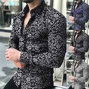
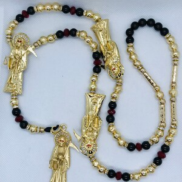
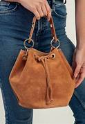
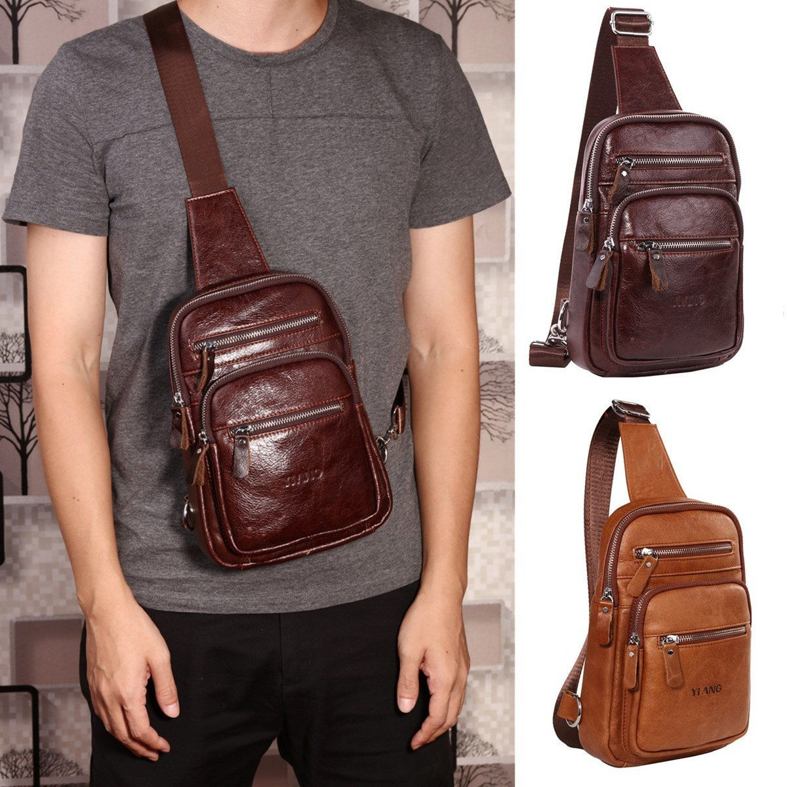

🔥🔥CONOCE NUESTROS ARTICULOS MAS VENDIDOS 🔥🔥
TENEMOS DISPONIBLES LAS SIGUENTES TALLAS:
- ✔ CHICA
- ✔ GRANDE
- ✔ MEDIANA
- ✔ INFANTIL
"CapTumbados" es una empresa única que se dedica a la venta de gorras inspiradas en los famosos corridos tumbados y en la fauna.
Su misión es conectar la cultura y la naturaleza con la moda para crear gorras que sean tanto una declaración de estilo como una expresión de identidad.
Cada gorra de CapTumbados es un tributo a la música de los corridos tumbados, reflejando su ritmo,
su pasión y su espíritu rebelde. Los diseños incluyen desde letras icónicas de canciones hasta retratos estilizados de los artistas más populares del género.
Además, CapTumbados ofrece una línea de gorras con temática de animales, perfectas para los amantes de la naturaleza. Estas gorras presentan ilustraciones detalladas de diferentes especies, desde el majestuoso águila hasta el feroz jaguar.
CapTumbados se enorgullece de su compromiso con la calidad y la autenticidad.
Cada gorra está hecha con materiales duraderos y diseñada por artistas que tienen un profundo respeto y conocimiento de la cultura de los corridos tumbados y de la fauna.
En resumen, CapTumbados no solo vende gorras, vende una forma de vida, una forma de conectar con la música, la naturaleza y la identidad cultural.
Cada gorra es una pieza de arte que permite a los clientes expresar su individualidad y sus pasiones.

Más Productos
Camisetas y Sudaderas: Podrías vender camisetas y sudaderas con diseños que hagan juego con tus gorras. Podrían llevar frases de canciones populares de corridos tumbados o imágenes de artistas famosos del género.

Pulseras y Collares: Los accesorios siempre son una buena opción. Podrías ofrecer pulseras y collares con dijes relacionados con la música de corridos tumbados.
Pósters y Calcomanías: Los pósters de artistas o calcomanías con frases de canciones pueden ser un gran complemento para los fans de los corridos tumbados.
Mochilas y Bolsos: Otro producto que podrías considerar son las mochilas o bolsos con diseños de corridos tumbados. Serían prácticos y a la vez permitirían a tus clientes mostrar su amor por la música.
 